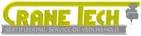

Crane Tech AS · Sandnes
Spesialister på kran, løft og fasadeadkomst.
Vi tilbyr totale vedlikeholdspakker samt sakkyndig kontroll, service og vedlikehold av elektromekanisk utstyr i maskinparken deres.
Sakkyndig kontrollServiceavtalerIndustriservice
- Sandnes
- base for hele Sør-Vestlandet
- Kontroll
- sakkyndig kontroll av løft og adkomst
- Service
- vedlikeholdspakker på maskinparken
- HMS
- sertifisering og forskrifter
Alt som løfter, og alt som holder det ved like.
Crane Tech AS har som målsetting å være blant de ledende innen industriell service, med hovedsatsing på salg, service og vedlikehold av elektromekanisk utstyr.
Sakkyndig kontroll
Kontroll av kraner, løfteredskap og adkomstutstyr, med dokumentasjon og avviksliste.
02Service og vedlikehold
Serviceavtaler som forlenger utstyrets levetid og forebygger unødig stans i produksjonen.
03Kraner og taljer
Salg, montering og oppfølging av kraner, taljer og løfteredskap for industri og bygg.
04Fasadeadkomst
Byggeplassheiser, klatre- og hengestillas, personløftere og fallsikring.
05Industriservice
Gaffeltrucker, kompressorer og elektromekanisk utstyr — service der maskinen står.
06Rådgivning
Usikker på hva forskriftene krever? Vi går gjennom utstyret og sier hva som må gjøres.
Kontrollen er ikke et skjema. Den er svaret på om utstyret er trygt.
Løfteutstyr som ikke er kontrollert er ikke bare et HMS-problem — det er et produksjonstap som venter på å skje. Vi kontrollerer utstyret der det står, dokumenterer funnene og sier hva som må utbedres før det brukes videre.
- 01Periodisk kontrollKraner, taljer, løfteredskap, heiser og personløftere etter gjeldende intervall.
- 02DokumentasjonKontrollrapport med merking, funn og frist for utbedring.
- 03OppfølgingVi kommer tilbake og kontrollerer at avviket faktisk er lukket.

Der utstyret står.
Vi jobber på byggeplasser, i produksjonshaller og på anlegg. Her er typene oppdrag vi tar.
Kran og heis på byggeplass
Service på maskinparken
Adkomst til fasade og tak
Ledende innen industriell service.
Crane Tech AS har som målsetting å være blant de ledende innen industriell service, med hovedsatsing på salg, service og vedlikehold av elektromekanisk utstyr.
Vi holder til i Lundegeilen 8 i Sandnes, og jobber med kunder som har utstyr som må virke: kraner, taljer, heiser, stillaser, trucker og kompressorer.
En serviceavtale med oss forlenger utstyrets levetid og forebygger unødig stans i produksjonen. Vi tar også enkeltjobber — men de fleste kundene våre ender med en avtale, fordi det er billigere enn å vente på havari.
«Vi har stadig økende oppdragsmengde og søker etter en servicetekniker til teamet vårt.»
Crane Tech AS · ledige stillinger
Trenger utstyret en kontroll?
Ring oss eller send en henvendelse med hva slags utstyr det gjelder, så avtaler vi tid.